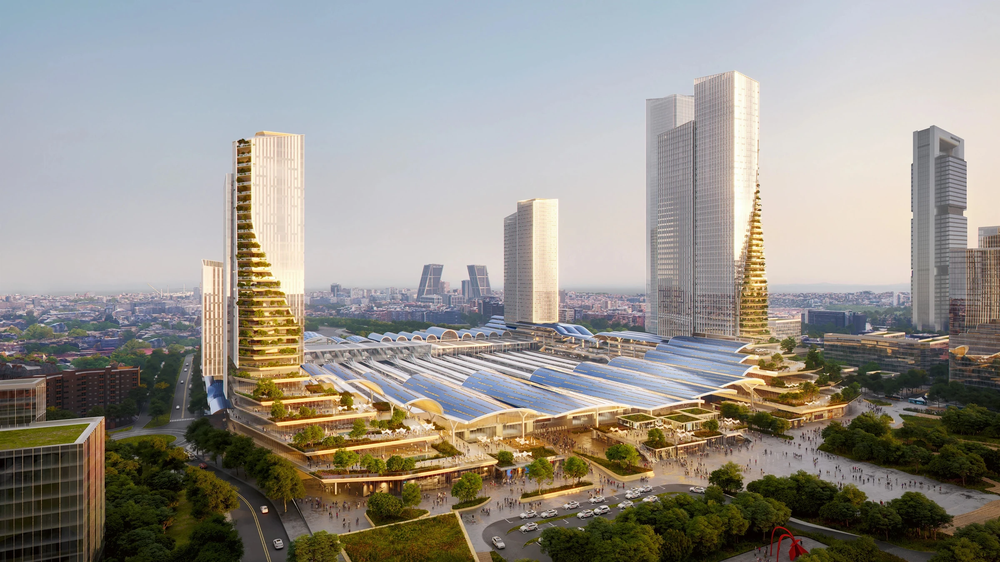
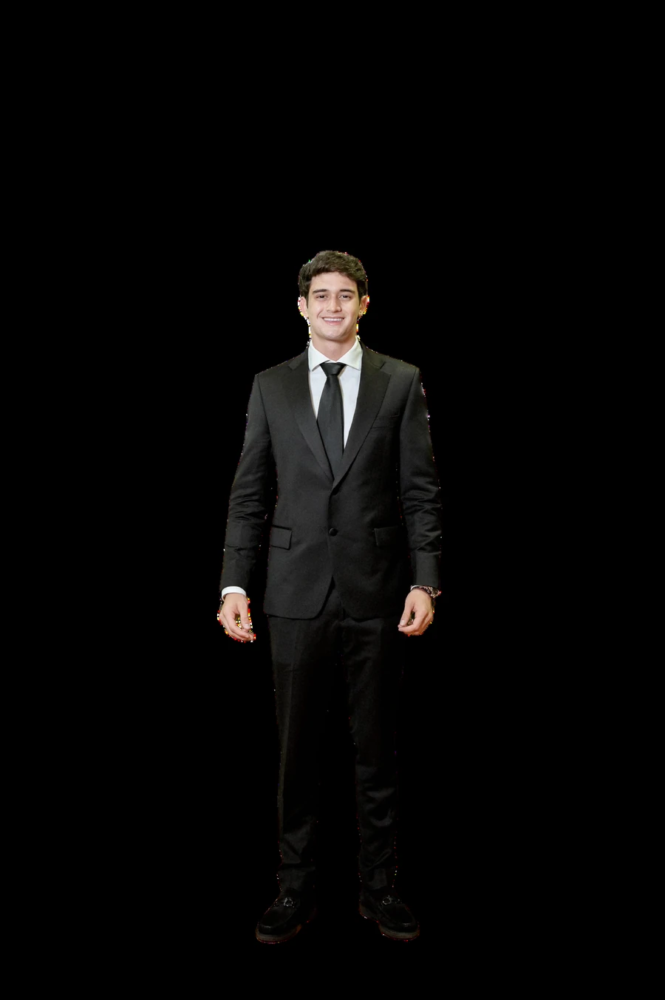
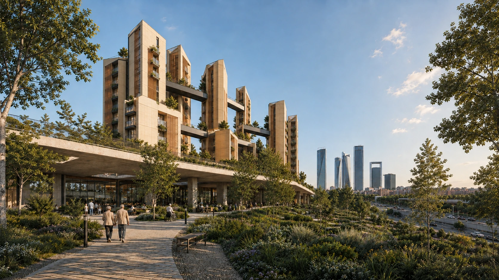

Explorar ↓Perfil
Sobre mí
Estudiante de séptimo semestre de Arquitectura en la Pontificia Universidad Javeriana, con interés en urbanismo y diseño urbano a escala urbana, barrial y sectorial.
Mi formación explora la interacción entre arquitectura, paisaje, ciudad y espacio público. El análisis territorial orienta mi proceso proyectual mediante trabajo de campo, cartografía, diagramas, registro fotográfico y reflexión crítica.
Me interesan especialmente los centros urbanos y las estrategias de revitalización que promueven integración social, sostenibilidad y apropiación del espacio público.

Selección
Proyectos

Chamartín · Madrid
Leer el territorio antes de intervenir.
El proyecto combina análisis urbano, ambiental y formal para definir una residencia asistida y un hospital geriátrico conectados con el espacio público, la Colonia de San Cristóbal y la transformación de Madrid Nuevo Norte.

Arq. Carlos Hernández
Carlos Hernández Correa es arquitecto de la Universidad de los Andes, con estudios en Arquitectura y Urbanismo en Harvard y una maestría en Estudios Internacionales de la Pontificia Universidad Javeriana. Fundador del Taller de la Ciudad y Director del Proyecto Nuevos Territorios de la PUJ desde 1996, ha colaborado con estudios como Rogelio Salmona y Esguerra Sáenz y Samper, recibiendo reconocimientos en la Bienal Colombiana de Arquitectura y los Premios Corona Pro Hábitat.
Análisis urbano
Movilidad y conectividad
El sector presenta alta conectividad metropolitana gracias a la M-30, el Paseo de la Castellana y la Avenida Llano Castellano. Sin embargo, estas grandes infraestructuras priorizan el tráfico vehicular y generan barreras urbanas que fragmentan la movilidad peatonal y ciclista. El diagnóstico evidencia una contradicción entre la buena accesibilidad regional y la baja permeabilidad y conexión local entre los distintos sectores de Chamartín.
Simulación
Tráfico y cuellos de botella
La simulación evidencia una congestión significativa en la red vial, con 900 vehículos, de los cuales 323 circulan congestionados a menos de 12 km/h. Los principales puntos de ralentización se concentran en intersecciones y conexiones entre vías, identificando cuellos de botella que reducen la fluidez del sector.
La simulación se reproduce directamente dentro de la página.

Ing. Alexandra Ortíz
Alexandra Ortíz es ingeniera industrial de la Universidad de los Andes, con maestría en Planificación Urbana y doctorado en Planificación Regional de la University of Illinois at Urbana-Champaign. Cuenta con 26 años de experiencia en desarrollo urbano en el Banco Mundial, trabajando en planificación territorial, gestión del suelo, vivienda, transporte, patrimonio, gestión de riesgos y adaptación al cambio climático en 15 países de Asia, Latinoamérica, el Caribe, Medio Oriente y África del Norte. Actualmente es profesora de urbanismo en la Pontificia Universidad Javeriana.
Clima
Asoleación y vientos
El análisis muestra una alta incidencia solar desde el sur durante las horas centrales del verano, mientras que en invierno predominan vientos fríos provenientes del norte. Esto plantea la necesidad de controlar la radiación en la fachada sur y proteger el proyecto frente a los vientos del norte.
Proyecto implantado
Respuesta climática
Con el proyecto implantado, los vientos fríos del norte atraviesan y se aceleran entre las torres, por lo que se incorporan zonas de resguardo, vegetación y elementos de protección en los recorridos. Hacia el sur, las fachadas reciben mayor incidencia solar y el proyecto responde mediante sombras entre volúmenes, balcones y control solar, buscando mejorar el confort de los espacios exteriores y de las viviendas.
Sección
Cortes y manejo ambiental
Los cortes muestran cómo se organiza el proyecto verticalmente: el hospital se concentra en la base, la plataforma colectiva articula las torres y los puentes conectan las viviendas y espacios comunes.
En el manejo ambiental, el proyecto incorpora captación solar, iluminación natural, ventilación cruzada y protección solar para reducir la demanda energética. Para el agua, se plantean cubiertas verdes, superficies permeables, jardines de lluvia y sistemas de captación e infiltración que ayudan a controlar la escorrentía.
Proceso
Iteraciones proyectuales
Las iteraciones parten de una ocupación más continua mediante barras y evolucionan hacia una composición cada vez más fragmentada. El proceso busca abrir el proyecto, generar patios y áreas verdes centrales, mejorar los recorridos peatonales y conectar las piezas mediante espacios comunes. La última iteración consolida una estructura más porosa, con volúmenes independientes articulados por el espacio público.
Concepto
Fragmentación y porosidad
El concepto parte de liberar el nivel del suelo y concentrar la ocupación en piezas fragmentadas y conectadas. La masa inicial se perfora para generar vacíos y espacio público, luego se divide en volúmenes que se articulan mediante recorridos y plataformas comunes. Así, el proyecto busca una estructura porosa, con mayor presencia de vegetación y continuidad peatonal.
Componente estético
Filosofía, Estética y Arquitectura
Martín Jaramillo y Angela Herrera · Relación entre filosofía, estética y arquitectura.

Arq. César Ramírez
César Ramírez es arquitecto, profesor e investigador de la Pontificia Universidad Javeriana, con una trayectoria enfocada en la relación entre arquitectura, estética, paisaje, cultura y territorio. Ha liderado proyectos de investigación, gestión cultural y cooperación internacional en Colombia y Reino Unido, y ha participado en más de 30 workshops nacionales e internacionales.
Contexto
Historia y transformación
El collage muestra el contraste entre la identidad histórica de Madrid y la transformación contemporánea de Chamartín. Destacan la infraestructura ferroviaria, los grandes desarrollos verticales y los espacios verdes como elementos que hoy estructuran el sector y reflejan su proceso de renovación urbana.
Reúne hitos como las Cuatro Torres, la IE Tower y la Estación de Chamartín, junto con referentes históricos como la Puerta de Alcalá, el Palacio Real y la Catedral de la Almudena.
Organización funcional
Axonometría
La axonometría organiza el proyecto por niveles: en planta baja se ubican el parque y el hospital geriátrico; sobre este se desarrolla una plataforma colectiva con recorridos, estancias y áreas comunes. Las torres concentran 71 viviendas para adultos mayores y programas colectivos, conectados mediante puentes habitables que facilitan la circulación y el encuentro entre los residentes.
Plantas
Organización por funciones
Las plantas muestran una organización clara por funciones: el hospital geriátrico se desarrolla en la base, articulado por patios que aportan iluminación y ventilación. Sobre este se ubica la plataforma colectiva, que conecta las torres mediante recorridos, áreas de estancia y vegetación. En los niveles superiores se distribuyen las viviendas para adultos mayores y los espacios de servicios y actividades comunes.
Escala urbana
Máster plan y eje verde
El máster plan plantea la implantación del proyecto como una pieza de transición entre la Colonia de San Cristóbal y la transformación prevista por Madrid Nuevo Norte. La propuesta se conecta con el gran eje verde, buscando dar continuidad peatonal y ambiental hacia la futura transformación de la estación de Chamartín. Así, el proyecto aprovecha la renovación urbana prevista sin aislarse del tejido residencial existente de la colonia.